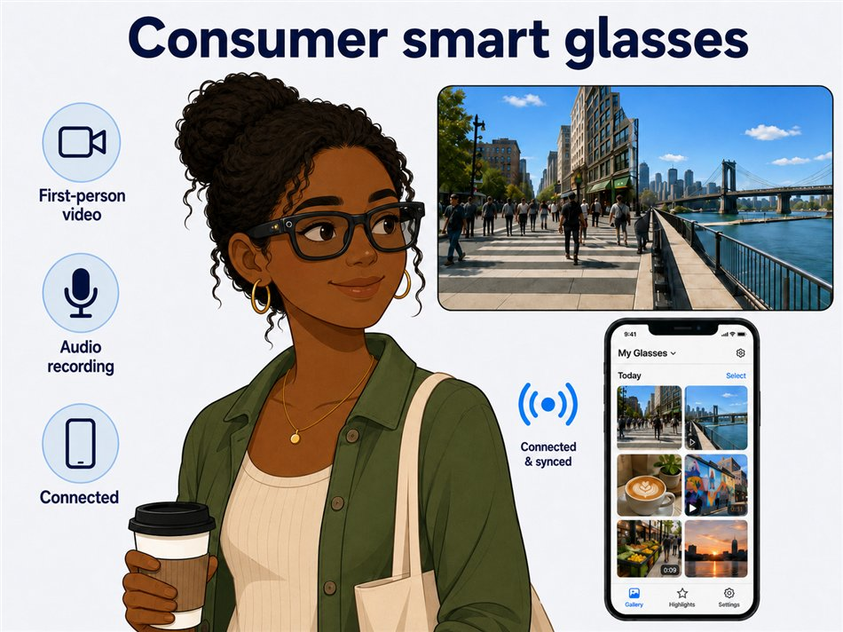
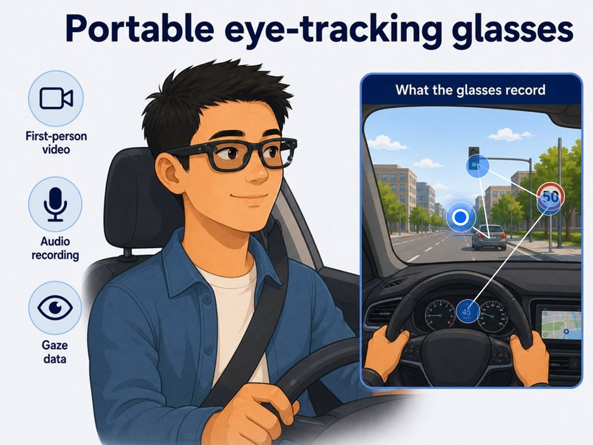

What do you think about wearable recording glasses?
Take part in a 15-minute academic survey about glasses that can record the surrounding environment and where the wearer looks.


Why this study matters
First-person recording is moving into ordinary social life.
Wearable recording glasses sit at the meeting point of several familiar trends: content creation, livestreaming, entertainment, social media, personal archiving, work, healthcare, training, and accessibility.
As recording becomes easier to wear, it also becomes less obvious to the people around the wearer. Questions about visibility, comfort, consent, and appropriate use are likely to become more relevant in shared spaces.
Taking part
The survey is open to adults aged 18 and over.
It takes about 15 minutes and asks for your views on possible uses, concerns, and safeguards.
No technical background or previous experience with wearable recording glasses is needed.
Your responses will help build a clearer picture of public expectations around these technologies.
Share your views
Contribute to building an understanding of how wearable recording technologies are perceived, and help inform policies and future developments.
Choose a language. The survey will open in Qualtrics and takes approximately 15 minutes.